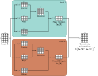
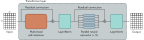

import numpy as np
import matplotlib.pyplot as plt
# Set seed so we get the same random numbers
np.random.seed(3)
# Number of inputs
N = 6
# Number of dimensions of each input
D = 8
# Create an empty list
X = np.random.normal(size=(D,N))
# Print X
print(X)Extentions to dot-product self-attention
Positional encoding
Absolute positional encodings
Relative positional encodings
Scaled dot-product self-attention
\[\begin{eqnarray} \mbox{{\bf Sa}}[\mathbf{X}] =\mathbf{V}\cdot\mbox{\bf Softmax}\left[\frac{\mathbf{K}^{T}\mathbf{Q}}{\sqrt{D}_{q}}\right]. \end{eqnarray}\]
Multiple heads
\[\begin{eqnarray} \mathbf{V}_h &=& \boldsymbol\beta_{vh}\mathbf{1}^{T}+\boldsymbol\Omega_{\mathit{vh}}\mathbf{X}\nonumber \\ \mathbf{Q}_h &=& \boldsymbol\beta_{qh}\mathbf{1}^{T}+\boldsymbol\Omega_{\mathit{qh}}\mathbf{X}\nonumber \\ \mathbf{K}_h &=& \boldsymbol\beta_{kh}\mathbf{1}^{T}+\boldsymbol\Omega_{\mathit{kh}}\mathbf{X}. \end{eqnarray}\]
\[\begin{eqnarray} \mbox{{\bf Sa}}_{h}[\mathbf{X}] =\mathbf{V}_h\cdot\mbox{\bf Softmax}\left[\frac{\mathbf{K}_h^{T}\mathbf{Q}_h}{\sqrt{D}_{q}}\right], \end{eqnarray}\]

Multi-head self-attention. Self-attention occurs in parallel across multiple “heads.” Each has its own queries, keys, and values. Here two heads are depicted, in the cyan and orange boxes, respectively. The outputs are vertically concatenated, and another linear transformation Ωc is used to recombine them.
\[\begin{eqnarray} \mbox{{\bf MhSa}}[\mathbf{X}] = \boldsymbol\Omega_{c}\Bigl[\mbox{{\bf Sa}}_{1}[\mathbf{X}]^T,\mbox{{\bf Sa}}_{2}[\mathbf{X}]^T,\ldots,\mbox{{\bf Sa}}_{H}[\mathbf{X}]^T \Bigr]^T. \end{eqnarray}\]
Transformer layers

Transformer layer. The input consists of a D × N matrix containing the D-dimensional word embeddings for each of the N input tokens. The output is a matrix of the same size. The transformer layer consists of a series of operations. First, there is a multi-head attention block, allowing the word embeddings to interact with one another. This forms the processing of a residual block, so the inputs are added back to the output. Second, a LayerNorm operation is applied separately to each embedding. Third, there is a second residual layer where the same fully connected neural network is applied separately to each of the N word representations (columns). Finally, LayerNorm is applied again.
\[\begin{eqnarray} \mathbf{X} &\leftarrow& \mathbf{X} + \mbox{\bf{MhSa}}[\mathbf{X}] \nonumber \\ \mathbf{X} &\leftarrow& \mbox{\bf{LayerNorm}}[\mathbf{X}] \hspace{3cm}\nonumber\\ \mathbf{x}_{n} &\leftarrow& \mathbf{x}_{n}+\mbox{\bf{mlp}}[\mathbf{x}_{n}] \hspace{3.6cm}\forall\; n\in\{1,\ldots, N\}\nonumber\\ \mathbf{X} &\leftarrow& \mbox{\bf{LayerNorm}}[\mathbf{X}], \end{eqnarray}\]
The multihead self-attention mechanism maps \(N\) inputs \(\mathbf{x_n} \in \mathbb{R}^D\) and returns N outputs \(\mathbf{x^{\prime}} \in \mathbb{R}^D\) .
We’ll use two heads. We’ll need the weights and biases for the keys, queries, and values (equations 12.2 and 12.4). We’ll use two heads, and (as in the figure), we’ll make the queries keys and values of size D/H
# Number of heads
H = 2
# QDV dimension
H_D = int(D/H)
# Set seed so we get the same random numbers
np.random.seed(0)
# Choose random values for the parameters for the first head
omega_q1 = np.random.normal(size=(H_D,D))
omega_k1 = np.random.normal(size=(H_D,D))
omega_v1 = np.random.normal(size=(H_D,D))
beta_q1 = np.random.normal(size=(H_D,1))
beta_k1 = np.random.normal(size=(H_D,1))
beta_v1 = np.random.normal(size=(H_D,1))
# Choose random values for the parameters for the second head
omega_q2 = np.random.normal(size=(H_D,D))
omega_k2 = np.random.normal(size=(H_D,D))
omega_v2 = np.random.normal(size=(H_D,D))
beta_q2 = np.random.normal(size=(H_D,1))
beta_k2 = np.random.normal(size=(H_D,1))
beta_v2 = np.random.normal(size=(H_D,1))
# Choose random values for the parameters
omega_c = np.random.normal(size=(D,D))Now let’s compute the multiscale self-attention
# Define softmax operation that works independently on each column
def softmax_cols(data_in):
# Exponentiate all of the values
exp_values = np.exp(data_in) ;
# Sum over columns
denom = np.sum(exp_values, axis = 0);
# Compute softmax (numpy broadcasts denominator to all rows automatically)
softmax = exp_values / denom
# return the answer
return softmax
# Now let's compute self attention in matrix form
def multihead_scaled_self_attention(X,omega_v1, omega_q1, omega_k1, beta_v1, beta_q1, beta_k1, omega_v2, omega_q2, omega_k2, beta_v2, beta_q2, beta_k2, omega_c):
# TODO Write the multihead scaled self-attention mechanism.
# Replace this line
X_prime = np.zeros_like(X) ;
return X_prime
# Run the self attention mechanism
X_prime = multihead_scaled_self_attention(X,omega_v1, omega_q1, omega_k1, beta_v1, beta_q1, beta_k1, omega_v2, omega_q2, omega_k2, beta_v2, beta_q2, beta_k2, omega_c)
# Print out the results
np.set_printoptions(precision=3)
print("Your answer:")
print(X_prime)
print("True values:")
print("[[-21.207 -5.373 -20.933 -9.179 -11.319 -17.812]")
print(" [ -1.995 7.906 -10.516 3.452 9.863 -7.24 ]")
print(" [ 5.479 1.115 9.244 0.453 5.656 7.089]")
print(" [ -7.413 -7.416 0.363 -5.573 -6.736 -0.848]")
print(" [-11.261 -9.937 -4.848 -8.915 -13.378 -5.761]")
print(" [ 3.548 10.036 -2.244 1.604 12.113 -2.557]")
print(" [ 4.888 -5.814 2.407 3.228 -4.232 3.71 ]")
print(" [ 1.248 18.894 -6.409 3.224 19.717 -5.629]]")
# If your answers don't match, then make sure that you are doing the scaling, and make sure the scaling value is correct